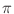

Initialization string format
Consider again the simple Specify block presented above:
Specify Oxs_EulerEvolve:foo {
alpha 0.5
start_dm 0.01
}
The first convention is that the initialization string be structured as
a Tcl list with an even number of elements, with
consecutive elements consisting of a label + value pairs. In the above
example, the initialization string consists of two label + value pairs,
``alpha 0.5'' and ``start_dm 0.01''. The first specifies that the
damping parameter {'' and ``}''). Opening braces and quotes
must be whitespace separated from the preceding text. Grouping
characters are removed during parsing. In this example the list as a
whole is set off with curly braces, and individual elements are white
space delimited. Generally, the ordering of the label + value pairs in
the initialization string is irrelevant, i.e., start_dm 0.01 could
equivalently precede alpha 0.5.
Sometimes the value portion of a label + value pair will itself be a list, as in this next example:
- Specify Oxs_BoxAtlas:myatlas {
- ...
- }
- Specify Oxs_RectangularMesh:mymesh {
- cellsize { 5e-9 5e-9 5e-9 }
- atlas Oxs_BoxAtlas:myatlas
- }
Here the value associated with ``cellsize'' is a list of 3 elements, which declare the sampling rate along each of the coordinate axes, in meters. (Oxs_BoxAtlas is a particular type of Oxs_Atlas, and ``...'' mark the location of the Oxs_BoxAtlas initialization string, which is omitted because it is not pertinent to the present discussion.)
Oxs_Ext referencing
The ``atlas'' value in the mesh Specify block of the preceding example
refers to an earlier Oxs_Ext object, ``Oxs_BoxAtlas:myatlas''.
It frequently occurs that one Oxs_Ext object needs access to
another Oxs_Ext object. In this example the mesh object
:mymesh needs to query the atlas object :myatlas in order to
know the extent of the space that is to be gridded. The atlas object is
defined earlier in the MIF input file by its own, separate, top-level
Specify block, and the mesh object refers to it by simply specifying its
name. Here the full name is used, but the short form :myatlas
would suffice, provided no other Oxs_Ext object has the same short
name.
Alternatively, the Oxs_RectangularMesh object could define an Oxs_BoxAtlas object inline:
- Specify Oxs_RectangularMesh:mymesh {
- atlas { Oxs_BoxAtlas {
- ...
- }}
- cellsize { 5e-9 5e-9 5e-9 }
- }
In place of the name of an external atlas object, a two item list is provided consisting of the type of object (here Oxs_BoxAtlas) and the corresponding initialization string. The initialization string is provided as a sublist, with the same format that would be used if that object were initialized via a separate Specify block.
More commonly, embedded Oxs_Ext objects are used to initialize spatially varying quantities. For example,
Specify Oxs_UniaxialAnisotropy {
axis { Oxs_RandomVectorField {
min_norm 1
max_norm 1
}}
K1 { Oxs_UniformScalarField { value 530e3 } }
}
The magneto-crystalline anisotropy class Oxs_UniaxialAnisotropy
supports cellwise varying K1 and anisotropy axis directions. In this
example, the anisotropy axis directions are randomly distributed. To
initialize its internal data structure, Oxs_UniaxialAnisotropy
creates a local Oxs_RandomVectorField object. This object is
also a child of the Oxs_Ext hierarchy, which allows it to be
constructed using the same machinery invoked by the Specify
command. However, it is known only to the enclosing
Oxs_UniaxialAnisotropy object, and no references to it are
possible, either from other Specify blocks or even elsewhere inside
the same initialization string. Because it cannot be referenced, the
object does not need an instance name. It does need an initialization
string, however, which is given here as the 4-tuple ``min_norm 1
max_norm 1''. Notice how the curly braces are nested so that this
4-tuple is presented to the Oxs_RandomVectorField initializer as a
single item, while ``Oxs_RandomVectorField'' and the associated
initialization string are wrapped up in another Tcl list, so that the
value associated with ``axis'' is parsed at that level as a single item.
The value associated with ``K1'' is another embedded Oxs_Ext object. In this particular example, K1 is desired uniform (homogeneous) throughout the simulation region, so the trivial Oxs_UniformScalarField class is used for initialization (to the value 530e3 J/m^3). In the case of uniform fields, scalar or vector, a shorthand notation is available that implicitly supplies a uniform Oxs_Ext field class:
Specify Oxs_UniaxialAnisotropy {
axis { 1 0 0 }
K1 530e3
}
which is equivalent to
Specify Oxs_UniaxialAnisotropy {
axis { Oxs_UniformVectorField {
vector { 1 0 0 }
}}
K1 { Oxs_UniformScalarField { value 530e3 } }
}
While embedding Oxs_Ext objects inside Specify blocks can be convenient, it is important to remember that such objects are not available to any other Oxs_Ext object--only objects declared via top-level Specify blocks may be referenced from inside other Specify blocks. Also, embedded Oxs_Ext objects cannot directly provide user output. Furthermore, the only Oxs_Energy energy objects included in energy and field calculations are those declared via top-level Specify blocks. For this reason Oxs_Energy terms are invariably created via top-level Specify blocks, and not as embedded objects.
Grouped lists
As noted earlier, sometimes the value portion of a label + value pair
will be a list. Some Oxs objects support grouped lists, which
provide a type of run-length encoding for lists. Consider the sample
list
{ 1.1 1.2 1.2 1.2 1.2 1.3 }
In a grouped list the middle run of 1.2's may be represented as a
sublist with a repeat count of 4, like so
{ 1.1 { 1.2 4 } 1.3 :expand: }
Here the :expand: keyword, when appearing as the last element of
the top level list, enables the group expansion mechanism. Any
preceding element, such as { 1.2 4 }, that 1) is a proper
sublist, and 2) has a positive integer as the last element, is treated
as a grouped sublist with repeat count given by the last element. No
element of the top-level list is ever interpreted as a repeat count.
For example, the short form of the list
{ 1e-9 1e-9 1e-9 1e-9 1e-9 1e-9 }
is
{ { 1e-9 6 } :expand: }
Note the additional level of brace grouping. Grouped lists may also be
nested, as in this example
{ 5.0 { 5.1 { 5.2 3 } 5.3 2 } :expand: }
which is equivalent to
{ 5.0 5.1 5.2 5.2 5.2 5.3 5.1 5.2 5.2 5.2 5.3 }
There are some difficulties with this mechanism when the list components
are strings, such as filenames, that may contain embedded spaces. For
example, consider the list
{ "file 3" "file 3" "5 file" }
If we tried to write this as
{ { "file 3" 2 } "5 file" :expand: }
we would find that, because of the nested grouping rules, this grouped
list gets expanded into
{ file file file file file file "5 file" }
Here the trailing ``3'' in ``file 3'' is interpreted as a repeat count.
Following normal Tcl rules, the double quotes are treated as equivalents
to braces for grouping purposes. However, the keyword :noexpand:
may be used to disable further expansion, like so
{ { {"file 3" :noexpand:} 2 } "5 file" :expand: }
The :noexpand: keyword placed at the end of a list disables all
group expansion in that list. Although it is an unlikely example,
if one had a flat, i.e., non-grouped list with last element ``:expand:'',
then one would have to disable the grouping mechanism that would
otherwise be invoked by appending :noexpand: to the list. In
flat lists generated by program code, it is recommended to append
:noexpand: just to be certain that the list is not expanded.
As a matter of nomenclature, standard (i.e., flat) lists and single values are also considered grouped lists, albeit trivial ones. Any Oxs object that accepts grouped lists in its Specify block should explicitly state so in its documentation.
Comments
The standard Tcl commenting mechanism treats all text running from an
initial # symbol through to the end of a line as a comment. You may
note in the above examples that newlines are treated the same as
other whitespace inside the curly braces delimiting the Specify
initialization string. Because of this and additional reasons, Tcl comments cannot be used inside Specify blocks. Instead, by
convention any label + value pair where label is ``comment'' is treated
as a comment and thrown away. For example:
Specify Oxs_UniaxialAnisotropy {
axis { 1 0 0 }
comment {K1 4500e3}
K1 530e3
comment { 530e3 J/m^3 is nominal for Co }
}
Pay attention to the difference between ``comment'' used here as the
label portion of a label + value pair, and the MIF extension command
``Ignore'' used outside Specify blocks. In particular, Ignore
takes an arbitrary number of arguments, but the value element associated
with a comment label must be grouped as a single element, just as any
other value element.
Attributes
Sometimes it is convenient to define label + value pairs outside a
particular Specify block, and then import them using the
``attributes'' label. For example:
Specify Oxs_LabelValue:probdata {
alpha 0.5
start_dm 0.01
}
Specify Oxs_EulerEvolve {
attributes :probdata
}
The Oxs_LabelValue object is an Oxs_Ext class that does
nothing except hold label + value pairs. The ``attributes'' label acts as an
include statement, causing the label + value pairs contained in the
specified Oxs_LabelValue object to be embedded into the enclosing
Specify initialization string. This technique is most useful if the
label + value pairs in the Oxs_LabelValue object are used in
multiple Specify blocks, either inside the same MIF file, or
across several MIF files into which the Oxs_LabelValue block is
imported using the ReadFile MIF extension command.
User defined support procedures
A number of Oxs_Ext classes utilize user-defined Tcl procedures (procs) to provide extended runtime functionality. The
most common examples are the various field initialization script
classes, which call a user specified Tcl proc for each point in the
simulation discretization mesh. The proc returns a value, either
scalar or vector, which is interpreted as some property of the
simulation at that point in space, such as saturation magnetization,
anisotropy properties, or an external applied field.
Here is an example proc that may be used to set the initial magnetization configuration into an approximate vortex state, with a central core in the positive z direction:
proc Vortex { x_rel y_rel z_rel } {
set xrad [expr {$x_rel-0.5}]
set yrad [expr {$y_rel-0.5}]
set normsq [expr {$xrad*$xrad+$yrad*$yrad}]
if {$normsq <= 0.0125} {return "0 0 1"}
return [list [expr {-1*$yrad}] $xrad 0]
}
The return value in this case is a 3D vector representing the spin
direction at the point (x_rel,y_rel,z_rel). Procs
that are used to set scalar properties, such as saturation
magnetization Ms, return a scalar value instead. But in both
cases, the import argument list specifies a point in the simulation
mesh.
In the above example, the import point is specified relative to the extents of the simulation mesh. For example, if x_rel were 0.1, then the x-coordinate of the point is one tenth of the way between the minimum x value in the simulation and the maximum x value. In all cases x_rel will have a value between 0 and 1.
In most support proc examples, relative coordinates are the most flexible and easiest representation to work with. However, by convention, scripting Oxs_Ext classes also support absolute coordinate representations. The representation used is selected in the Oxs_Ext object Specify block by the optional script_args entry. The Tcl proc itself is specified by the script entry, as seen in this example:
proc SatMag { x y z } {
if {$z < 20e-9} {return 8e5}
return 5e5
}
Specify ScriptScalarField:Ms {
atlas :atlas
script_args { rawpt }
script SatMag
}
The value associated with the label script_args should in this
case be a subset of {relpt rawpt minpt maxpt span scalars
vectors}, as explained in the
Oxs_ScriptScalarField
documentation. Here
rawpt provides the point representation in problem coordinates,
i.e., in meters. Other Oxs_Ext objects support a different list
of allowed script_args values. Check the documentation of the
Oxs_Ext object in question for details. Please note that the
names used in the proc argument lists above are for exposition purposes
only. You may use other names as you wish. It is the order of the
arguments that is important, not their names. Also, MIF 2.1 files are
parsed first in toto before the Specify blocks are evaluated, so the
support procs may be placed anywhere in a MIF 2.1 file, regardless of
the location of the referencing Specify blocks. Conversely,
MIF 2.2
files are parsed in a single pass, with Specify blocks evaluated as they
are read. Therefore for MIF 2.2 files it is generally best to place
proc definitions ahead of Specify blocks in which they are referenced.
The command call to the Tcl support proc is actually built up by appending to the script value the arguments as specified by the script_args value. This allows additional arguments to the Tcl proc to be specified in the script value, in which case they will appear in the argument list in front of the script_args values. The following is equivalent to the preceding example:
proc SatMag { zheight Ms1 Ms2 x y z } {
if {$z < $zheight} {return $Ms1}
return $Ms2
}
Specify ScriptScalarField:Ms {
script_args { rawpt }
script {SatMag 20e-9 8e5 5e5}
}
Notice in this case that the script value is wrapped in curly
braces so that the string SatMag 20e-9 8e5 5e5 will be treated as
the single value associated with the label script.
As seen in the earlier example using the Vortex Tcl proc, support procedures in MIF 2.1 files will frequently make use of the Tcl expr command. If you are using Tcl version 8.0 or later, then the cpu time required by the potentially large number of calls to such procedures can be greatly reduced by grouping the arguments to expr commands in curly braces, as illustrated in the Vortex example. The braces aid the operation of the Tcl byte code compiler, although there are a few rare situations involving multiple substitution where such bracing cannot be applied. See the Tcl documentation for the expr command for details.
Sometimes externally defined data can be put to good use inside a Tcl support proc, as in this example:
# Lay out a 6 x 16 mask, at global scope.
set mask {
1 1 1 1 1 1 1 1 1 1 1 1 1 1 1 1
1 1 1 1 1 1 1 1 1 1 1 1 1 1 1 1
1 1 1 1 1 1 1 1 1 1 1 1 1 1 1 1
1 1 1 1 1 0 0 0 0 0 0 1 1 1 1 1
1 1 1 1 1 0 0 0 0 0 0 1 1 1 1 1
1 1 1 1 1 0 0 0 0 0 0 1 1 1 1 1
}
proc MyShape { xrel yrel znotused } {
global mask ;# Make mask accessible inside proc
set Ms 8e5 ;# Saturation magnetization of element
set xindex [expr {int(floor($xrel*16))}]
set yindex [expr {5 - int(floor($yrel*6))}]
set index [expr {$yindex*16+$xindex}]
# index references point in mask corresponding
# to (xrel,yrel)
return [expr {[lindex $mask $index]*$Ms}]
}
The variable mask holds a Tcl list of 0's and 1's defining a part
shape. The mask is brought into the scope of the MyShape proc via
the Tcl global command. The relative x and y coordinates are
converted into an index into the list, and the proc return value is
either 0 or 8e5 depending on whether the corresponding point in the mask
is 0 or 1. This is essentially the same technique used in the
ColorField proc example presented in the
ReadFile MIF extension command
documented above,
except that there the data structure values are built from a separate
image file rather than from data embedded inside the MIF file.
User defined scalar outputs
OOMMF Oxs_Ext objects support a general method to allow users to
define scalar (DataTable) outputs derived from vector field outputs.
These scalar outputs are defined by ``user_output'' sub-blocks inside
Specify blocks. The format is:
- user_output {
- name output_name
- source_field source
- select_field weighting
- normalize norm_request
- exclude_0_Ms novacuum
- user_scaling scale
- units units
- }
The first parameter, name, specifies the label attached to this output in the DataTable results; the full name will be the Specify block instance name, followed by :output_name. This label must follow the rules for ODT column labels; in particular, embedded newlines and carriage returns are not allowed.
The second parameter, source_field, specifies the vector field output that the output is derived from. The source value should match the label for the source field output as displayed in the ``Output'' pane of the Oxsii or Boxsi interactive interface; this can also be found in the documentation for the source field Oxs_Ext class. If the source field is from the same class as the user output, then source can use the short form of the name (i.e., the component following the last ``:''); otherwise the full name must be used.
The third parameter, select_field, references a field that is used to weight the source field to create the scalar output. The output is computed according to
where the sums are across all cells in the simulation, Wselect[i] is the value of the select field at cell i, Vsource[i] is the value of the source field at cell i, and `` . '' indicates the scalar (dot) product.The first three parameters are required, the remaining parameters are optional. The first of the optional parameters, normalize, affects the denominator in (17.1). If norm_request is 1 (the default), then the output is computed as shown in (17.1). If norm_request is 0, then instead the denominator is replaced with the number of cells in the simulation, i.e., 1.
The second optional parameter, exclude_0_Ms, is a convenience operator; if novacuum is 1, then the select field is reset so that it is the zero vector at all cells in the simulation where the saturation magnetization is zero. This is especially useful when you want to compute the average magnetization of a shaped part. The change to the select field is made before the denominator in (17.1) is computed, so setting exclude_0_Ms to 1 is equivalent to defining the select field as being zero where Ms is zero in the first place. The default value for this parameter is 0, which results in the select field being used exactly as defined.
The user_scaling parameter (default value 1.0) allows the user to define a constant factor that is multiplied against the result of (17.1). This can be used, for example, in conjuction with the units parameter to implement unit conversion. The units value is an arbitrary string (for example, A/m) that is placed in the DataTable output. This label must follow the rules for ODT unit labels; in particular, embedded newlines and carriage returns are not allowed. If units is not set, then the units string is copied from the units for the source field.
The following is a simple example showing two user outputs based off the demagnetization field:
Specify Oxs_BoxAtlas:atlas [subst {
xrange {0 $cube_edge}
yrange {0 $cube_edge}
zrange {0 $cube_edge}
}]
Specify Oxs_BoxAtlas:octant [subst {
xrange {0 [expr {$cube_edge/2.}]}
yrange {0 [expr {$cube_edge/2.}]}
zrange {0 [expr {$cube_edge/2.}]}
}]
Specify Oxs_AtlasVectorField:octant_field_y {
atlas :octant
default_value {0 0 0}
values {
octant {0 1 0}
}
}
Specify Oxs_Demag {
user_output {
name "Hdemag_x"
source_field Field
select_field {1 0 0}
}
user_output {
name "octant Hdemag_y"
source_field Field
select_field :octant_field_y
}
}
The first user output, ``Hdemag_x,'' returns the
x-component of the demagnetization field, averaged across the entire
simulation volume. This output will appear in DataTable output with the
label ``Oxs_Demag::Hdemag_x.'' The source_field parameter
``Field'' refers to the ``Field'' output of the surrounding
Oxs_Ext object, which here means Oxs_Demag::Field.
The select field is (1, 0, 0), uniform across the simulation volume.
The second output, ``octant Hdemag_y,'' is similar, but the
average is of the y component of the demagnetization field, and is
averaged across only the first octant of the simulation volume. The
averaging volume and component selection are defined by the
:octant_field_y field object, which is (0, 1, 0) in the first
octant and (0, 0, 0) everywhere else.
The source code for user defined scalar outputs can be found in the files ext.h and ext.cc in the directory oommf/app/oxs/base/. Example MIF files include cube.mif, pbcbrick.mif, spinvalve.mif, and stdprob2.mif in oommf/app/oxs/examples/.